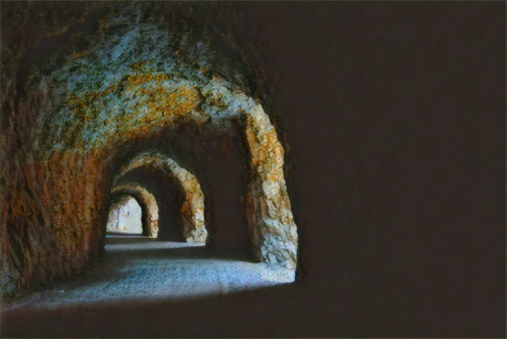

山有小口，彷彿若有光
2017-11-11

大家好，我是老闆「那個誰」，人生苦短，不如聽個「故事」解解悶？
「山有小口，彷彿若有光。」
千古文人都因為漁夫的一句話，期望走入洞後的一番理想天地，誰知當代每人都住在座座只有一吋燈光的山洞之中，期望在外奔波，能早日尋獲自己的桃花源，雖然無有落英，仍望有方良田，耕種那還未忘或已忘的人生。
故事柑仔店中許多人留下記憶中的伊甸園，但之後，人們多半就忘了曾去過的痕跡，繼續在路上惶惶而行，到處覓那別人說的理想國。老闆我最終都會於深夜的居酒屋、串燒店甚至是7-11發現這些西裝筆挺的人們，或酒酣耳熱、大聲喧嘩時；或暗自無語、吃著關東煮時，漸漸連別人說的那條緣溪行的路，都再也無法相信，便捨去年少的靈魂，徒剩軀體上路……。
不過別怪這個世界，也別怪自己，更別怪漁人，因為說不定漁人只是和你一樣，在船上做了場夢，當真而已，那塊人人互相善待，離開歷史巨輪的地方，可能從無出現過。
但故事柑仔店卻載滿了這些夢的故事，正一明一暗的提醒著老闆，他們並不虛幻。你看看，就像這個，幾乎是漁人再世：
「今民國末，大員人，上班為業，緣燈騎，倦而不知歸路遠近。忽逢居酒屋，店寬數十步，多有忘歸者，眼中無神，菸霧繚繞，上班族望而嘆之；復前行，欲近其宅。路中燈閃紅霓，旁見一家緩行。夫態悠然，妻媚兒俊，衣飾不凡，腕錶照人，其身彷彿若有光，上班族望之而忘，後車鳴，方前行。至屋舍車，從門入，初極狹，纔通人；復行數步，方寸之地盡矣。」
--無論你是誰，給我你的故事，我告訴你不知道的事--